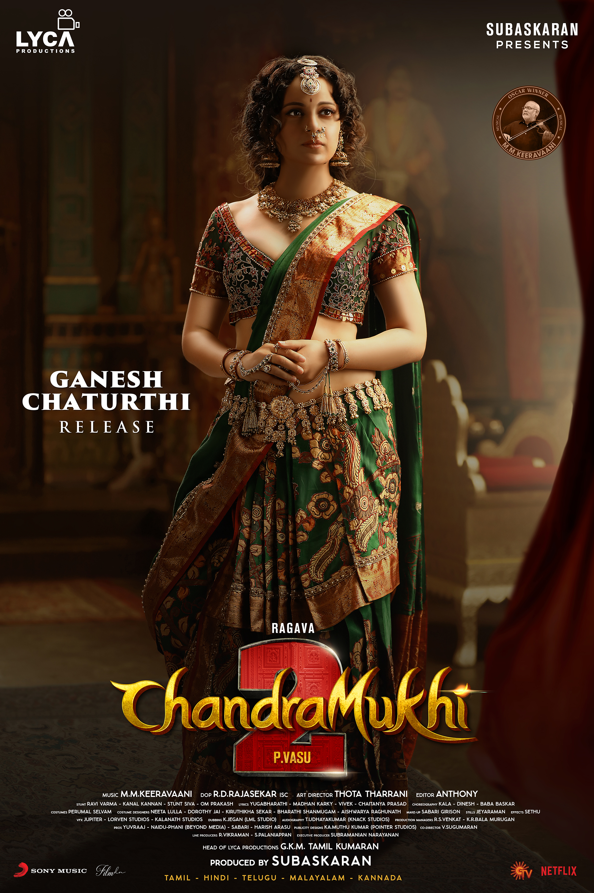

Chandramukhi 2 Review: Childhood Ruined

Rating:⭐
To all Chandramukhi fans, especially me, after watching this, do you feel like your childhood film has been ruined?
Well I'll tell you for sure mine did. Why? Why a sequel? This is a wasted opportunity for Kollywood cinema. Raghava
Lawrence needs to stop doing horror scripts, and try something different. Like he attempted to do it with Rudran, but
it had the same elements as his other films. The comedy somewhat worked, but everything else was trash. Also bruh people
be praising Kangana Ranaut as Chandramukhi, but I seriously think someone more talented can play as Chandramukhi. Jyothika
was defintely the OG. Overall, very disappointed! Also the one star is only for Vadivelu.